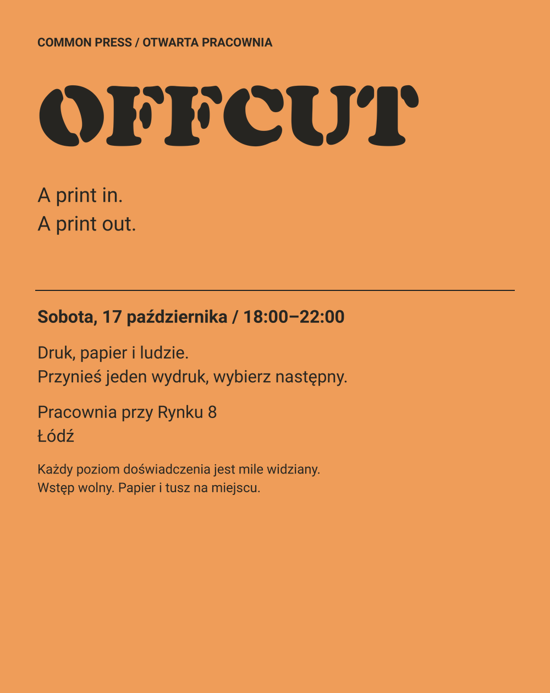

OFFCUT print exchange

| Role | Selected face | Size / line height | Axes |
|---|---|---|---|
| eyebrow | Roboto / Bold | 22 px / 30.8 px | {} |
| title | Cooper-Black-Stencil / Regular | 160 px / 160 px | {} |
| dek | Roboto / Regular | 37 px / 51.8 px | {} |
| body | Roboto / Regular | 31 px / 43.4 px | {} |
| heading | Roboto / Bold | 32 px / 44.8 px | {} |
| caption | Roboto / Regular | 24 px / 33.6 px | {} |
The composition above uses only the selected exact fonts. This page's controls and table use a separate system UI font. The PNG previews unhinted outline rasterization; inspect the final browser, printer, or engine before release.
Change IDs or role settings in spec.json and compose to a new directory to compare alternatives. One family for every role is supported. Assets are not bundled in the implementation recipe.